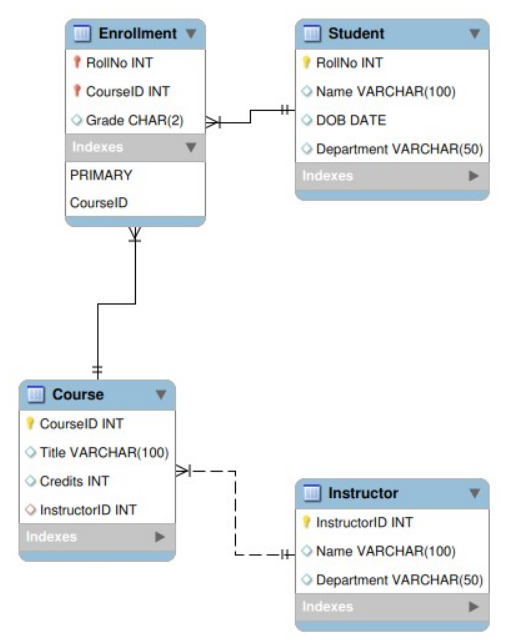
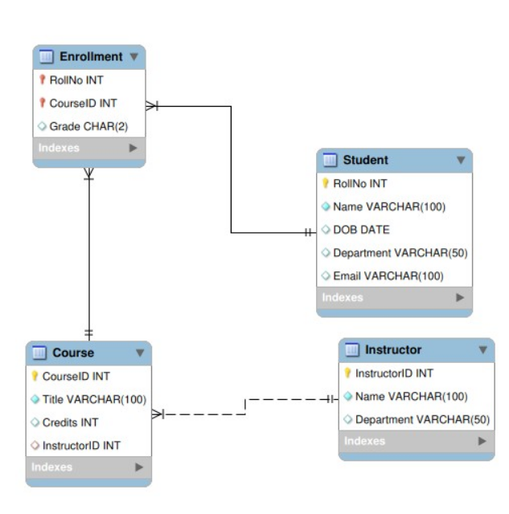
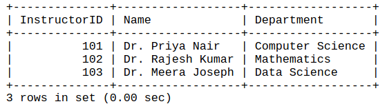
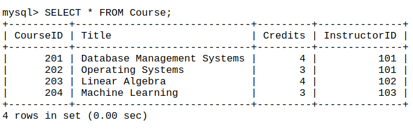
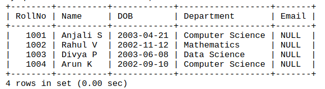
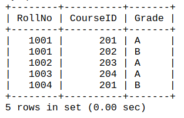
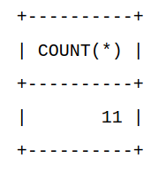
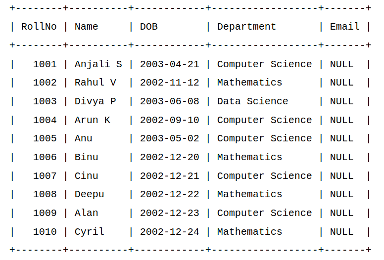
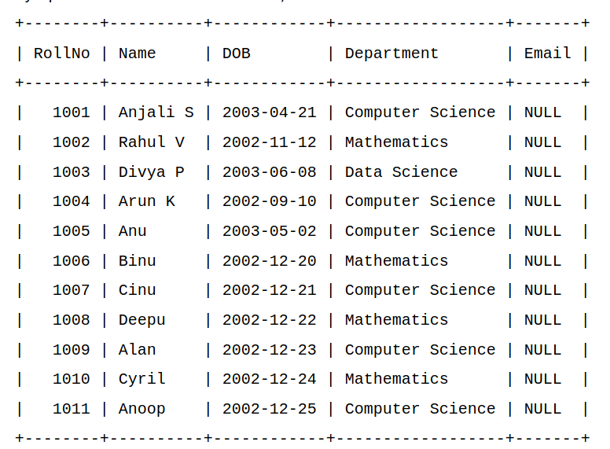

Introduction
Welcome to the DBMS Lab portal. Navigate the experiments using the sidebar menu. Each experiment contains problem description, SQL code, and results.
Experiment 1
Title: Database Schema Design using ER Diagram
Problem Description: A university wants to maintain a database for its students, courses, and instructors.
Entities:
- Student(RollNo, Name, DOB, Dept)
- Course(CourseID, Title, Credits)
- Instructor(InstructorID, Name, Dept)
- Enrollment(RollNo, CourseID, Grade)
Relationships:
- Student enrolls in many Courses (Many-to-Many)
- Instructor --< Course (One-to-Many))
SQL Queries:
1. Create Database and use it
CREATE DATABASE university; USE university;
2. Create Tables
Instructor Table
CREATE TABLE Instructor ( InstructorID INT PRIMARY KEY, Name VARCHAR(100), Department VARCHAR(50) );Course Table
CREATE TABLE Course ( CourseID INT PRIMARY KEY, Title VARCHAR(100), Credits INT, InstructorID INT, FOREIGN KEY (InstructorID) REFERENCES Instructor(InstructorID) );Student Table
CREATE TABLE Student ( RollNo INT PRIMARY KEY, Name VARCHAR(100), DOB DATE, Department VARCHAR(50) );Enrollment Table
CREATE TABLE Enrollment ( RollNo INT, CourseID INT, Grade CHAR(2), PRIMARY KEY (RollNo, CourseID), FOREIGN KEY (RollNo) REFERENCES Student(RollNo), FOREIGN KEY (CourseID) REFERENCES Course(CourseID) );
ER Diagram
Experiment 2
Title: Creation of database schema – DDL
Problem Description: Create tables, set constraints, enforce relationships, create indices, delete and modify tables). Export ER diagram from the database and verify relationships (with the ER diagram designed in exp1)
Entities:
- Student(RollNo, Name, DOB, Dept)
- Course(CourseID, Title, Credits)
- Instructor(InstructorID, Name, Dept)
- Enrollment(RollNo, CourseID, Grade)
Relationships:
- Student enrolls in many Courses (Many-to-Many)
- Course taught by Instructor (Many-to-One)
SQL Queries:
1. Create the Database and use it
CREATE DATABASE university; USE university;
2. Create Tables (DDL)
Instructor Table
CREATE TABLE Instructor ( InstructorID INT PRIMARY KEY, Name VARCHAR(100) NOT NULL, Department VARCHAR(50) );Course Table
CREATE TABLE Course ( CourseID INT PRIMARY KEY, Title VARCHAR(100) NOT NULL, Credits INT CHECK (Credits > 0), InstructorID INT, FOREIGN KEY (InstructorID) REFERENCES Instructor(InstructorID) ON DELETE SET NULL ON UPDATE CASCADE );Student Table
CREATE TABLE Student ( RollNo INT PRIMARY KEY, Name VARCHAR(100) NOT NULL, DOB DATE, Department VARCHAR(50) );Enrollment Table
(Junction table for many-to-many relationship) CREATE TABLE Enrollment ( RollNo INT, CourseID INT, Grade CHAR(2), PRIMARY KEY (RollNo, CourseID), FOREIGN KEY (RollNo)REFERENCES Student(RollNo) ON DELETE CASCADE ON UPDATE CASCADE, FOREIGN KEY (CourseID) REFERENCES Course(CourseID) ON DELETE CASCADE ON UPDATE CASCADE );
3. Create Indices (for fast retrieval)
1. Index for fast lookup of students by department
CREATE INDEX idx_student_dept ON Student(Department);2. Index for fast lookup of courses by instructor
CREATE INDEX idx_course_instructor ON Course(InstructorID);
4. Modify or Delete Tables
mysql> ALTER TABLE Student ADD Email VARCHAR(100); mysql> drop table Student;
5. Reading table information for completion of table and column names
desc Student; desc Instructor; desc Course; desc Enrollment;
ER Diagram
Experiment 3
Title: Database initialization – Data insert, Data import to a database (bulk import using UI and SQL Commands)
SQL Queries:
1. Insert Data (SQL Commands)
Insert in to Instructor Table
mysql> INSERT INTO Instructor (InstructorID, Name, Department)VALUES (101, 'Dr. Priya Nair', 'Computer Science'), (102, 'Dr. Rajesh Kumar', 'Mathematics'), (103, 'Dr. Meera Joseph', 'Data Science');Insert in to Course Table
mysql> INSERT INTO Course (CourseID, Title, Credits, InstructorID) VALUES (201, 'Database Management Systems', 4, 101), (202, 'Operating Systems', 3, 101), (203, 'Linear Algebra', 4, 102), (204, 'Machine Learning', 3, 103);Insert in to Student Table
mysql> INSERT INTO Student (RollNo, Name, DOB, Department)VALUES (1001, 'Anjali S', '2003-04-21', 'Computer Science'), (1002, 'Rahul V', '2002-11-12', 'Mathematics'), (1003, 'Divya P', '2003-06-08', 'Data Science'), (1004, 'Arun K', '2002-09-10', 'Computer Science');Insert in to Enrollment Table
mysql> INSERT INTO Enrollment (RollNo, CourseID, Grade) VALUES (1001, 201, 'A'), (1001, 202, 'B'), (1002, 203, 'A'), (1003, 204, 'A'), (1004, 201, 'B');
2. Verification Queries
mysql> SELECT * FROM Instructor;Result

mysql> SELECT * FROM Course;Result

mysql> SELECT * FROM Student;Result

mysql> SELECT * FROM Enrollment;Result

3. Bulk Data Import (CSV/Excel → Database)
Method 1: MySQL Workbench UI
1. Open MySQL Workbench → Select your Database (UniversityDB). 2. Right-click the table → Table Data Import Wizard. 3. Choose your .csv file. 4. Map columns to table fields. 5. Click Next → MySQL imports all rows.
4. Bulk Import Verification
Query
mysql> SELECT COUNT(*) FROM Student;Result
 mysql> SELECT * FROM Student LIMIT 10;  mysql> SELECT * FROM Student ; 
Experiment 4
Title: Practice SQL commands for DML (insertion, updating, altering, deletion of data, and viewing/querying records based on condition in databases).